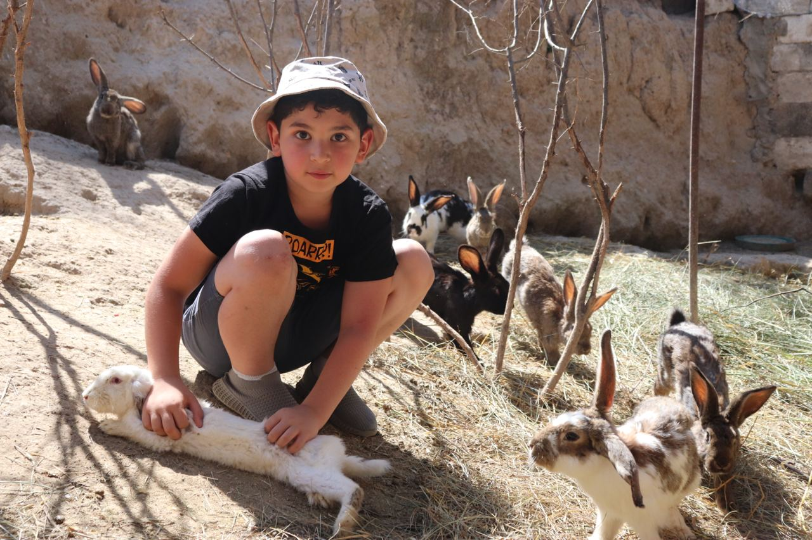
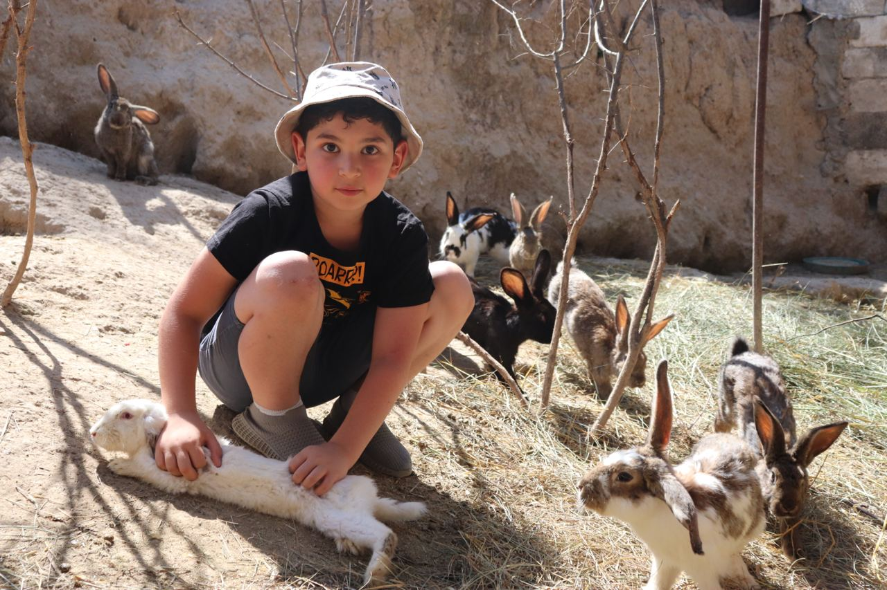

Миссия
Развитие сельских территорий Арцаха и Армении.
Цель
Создание микрофермерского хозяйства на сельских территориях Арцаха и Армении.
Задачи
1. Организация фермерского хозяйства, которое будет состоять из 50 кур, 50 индеек и 50 кроликов.
2. Строительство фермы на 200 кв. метров в течение 2-3 месяцев
3. Закупка животных.
4. Обучение жителей особенностям ухода за животными.
5. Организация процедуры выхода на самоокупаемость через 3 месяца после запуска.
Преимущества
Данный набор животных является оптимальным не только по эффективности, но и по организации хозяйства.
Мясо и яйца являются очень востребованными на локальном рынке, а также могут стать частью рациона питания организатора фермы.
Такое хозяйство требует работы 3-4 людей и может обеспечить семью до 7 человек.
При правильной организации через 3 месяца ферма может выйти на самоокупаемость и может приносить доход от продаж своей продукции до 600$ в месяц.
Для жителей сельских территориях Арцаха и Армении данная сумма является существенной.
В течение года основатель фермы должен вернуть проекту «Армгюх» 50 кур, 50 индеек и 50 кроликов, которые пойдут на запуск подобного проекта в других территориях. В течение 5 лет он обязуется отправлять инвестору каждый Новый год гостинцы из натуральных продуктов «Посылка от бабушки».

 
